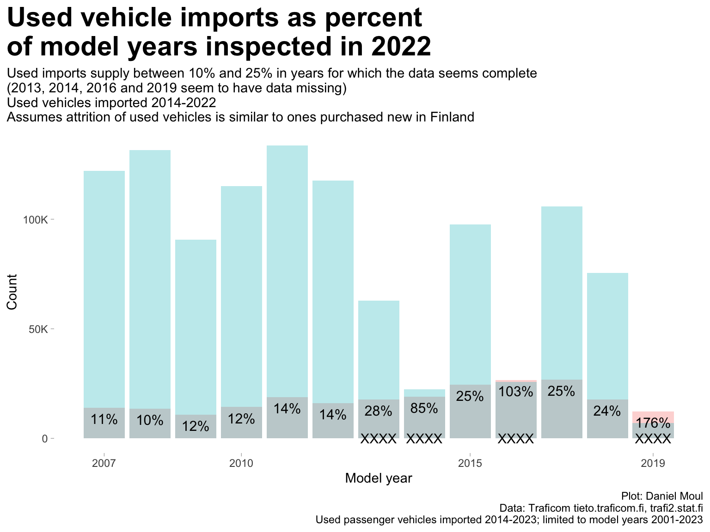

The data set includes used passenger vehicles imported during the years 2014-2023. I restrict the working set to vehicles of model years 2001+ and brands with more than 100 vehicles imported, resulting in model years 2001-2023, 86 brands with at least two imported vehicles, and 325632 vehicles over this time period. This slightly understates the total number of vehicle imported (see the long tails of older vehicles in 2014 and 2015 in panel A of Figure 6.2).
Figure 6.1: Used passenger vehicles imported to Finland
The most popular age for imported vehicles is four or five years old (Figure 6.2 panel A, panel C). At the same time, the yearly number of imports has been trending upwards since the first import year in this data set. Combining these trends: the record years are 2019 and 2021 (panel B).
Figure 6.2: Used passenger vehicles imported to Finland - by import year and model year
6.2 Brands
The most popular used car import brands includes most of the same brands as the top brands in the inspection data Figure 1.6, however the ranking is different: Mercedes-Benz, Volvo, and BMW have higher shares, and VW and Toyota have lower shares (compare with Figure 1.6)
Figure 6.3: Used Vehicle imports: count and share for 10 most popular brands
6.3 Used vehicle imports as percent of model year inspected
Show the code
dta_imported_yearly_count <- dta_working_set |>filter(import_year <=2022) |># don't include imports after the 2022 inspection yearcount(model_year, wt = n, name ="import_count")dta_imported_inspected <- dta_imported_yearly_count |>left_join(dta_inspections_yearly_count,by =join_by(model_year)) |>filter(!is.na(inspection_count)) |>mutate(pct = import_count / inspection_count)
After four or five years, used vehicle imports supply up to about a quarter of the passenger vehicles on the road in Finland for any model year (Figure 6.4). Percentages prior to 2014 likely are under counts, since the data set does not include vehicles imported during years before 2014.
Show the code
data_for_plot <- dta_imported_inspected |>pivot_longer(cols =c(import_count, inspection_count),names_to ="metric",values_to ="value")min_model_year_plot <-min(data_for_plot$model_year)max_model_year_plot <-max(data_for_plot$model_year)plot_breaks <- data_for_plot |>distinct(model_year) |>filter(model_year %in%c(min_model_year_plot, max_model_year_plot) | model_year %%5==0)data_for_plot |>ggplot() +geom_col(aes(model_year, value,fill = metric ),position =position_identity(),#position = position_dodge(),show.legend =FALSE,na.rm =TRUE, alpha =0.3) +geom_text(aes(model_year, ifelse(metric %in%c("inspection_count"), value * pct,NA),label =percent(pct, accuracy =1) ),na.rm =TRUE, hjust =0.5, nudge_y =-5000, size =4 ) +geom_text(data =tibble(model_year =c(2013, 2014, 2016, 2019),value =100,label ="XXXX"),aes(model_year, value, label = label)) +scale_x_continuous(breaks = plot_breaks$model_year) +scale_y_continuous(labels =label_number(scale_cut =cut_short_scale())) +labs(title ="Used vehicle imports as percent\nof model years inspected in 2022",subtitle =glue("Used imports supply between 10% and 25% in years for which the data seems complete","\n(2013, 2014, 2016 and 2019 seem to have data missing)","\nUsed vehicles imported 2014-2022","\nAssumes attrition of used vehicles is similar to ones purchased new in Finland"),x ="Model year",y ="Count",fill =NULL,caption = my_caption )

Figure 6.4: Imports of model years as percent of all model years inspected in 2022